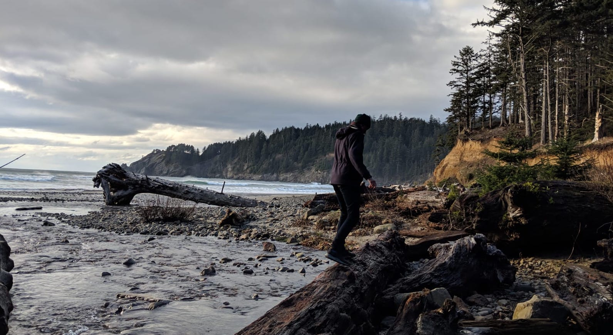

I began my journey as a digital nomad just under a year ago. With just a remote job, a backpack and a one-way ticket to Eastern Europe, I didn’t have much idea what I was signing up for.
Digital nomadism is an entirely new lifestyle and it brings with it whole bag of unique benefits as well as some serious challenges. Most people have a pretty strong grasp of the benefits; Freedom to travel perpetually, to live in cheap countries, to escape from the commute and routine of your home city. Anyone familiar with the lifestyle can undoubtedly picture someone overlooking a pool in Bali with their laptop and a fruity cocktail. Unfortunately this blog post won’t feature any photos of pools or cocktails. I want to talk about the downsides because I know I didn’t fully consider them before taking the plunge myself.
Exercise and diet are two of the first things to slip for me when my routine is thrown off. Unfamiliar neighbourhoods, no gym membership and no casual sports team combine to make this guy much less likely to do any intense exercise in a given week. I’ve generally made up for it through exploring new cities on foot and doing lots of hiking on the weekends, but I definitely miss the futsal games and the feeling of flow during a long run.
Add to this that you find yourself in a new place with a new kitchen every month or two. Kitchens vary in quality, along with the available ingredients in the local area, making it tough to recreate my usual health focused cooking. Without this to counteract indulging in the local cuisine (non-negotiable for me), my diet has gone through lots of peaks and troughs in the past year. Another problem for me is when the place that I’m staying doesn’t have many spices or other high-cost, low-use items. It’s not feasible to buy these in each location and difficult to take them with you each time you travel.

My only advice here is to pick accomodation very carefully. Look closely at the kitchen in photos & scour reviews for clues about its quality, even send the owner a message to inquire about specifics. It will be worth it when you effortlessly whip up that comfort food from home after a day of being confused and out of your depth. The exercise part is slightly harder and more dependent on your workout preferences. I always check the location of my place to see if it is near a large park or common running trails. MapMyRun is a useful resource to see where people are running in a particular place.
There is a common saying,
A place is only as good as the people you know in it. It’s the people that make the place.
This rings true for me personally, as there is no greater factor deciding whether I like a city.
I keep hearing from other nomads that the biggest downside to their lifestyle is not having a chance at long-term meaningful relationships, whether romantic or platonic. There are plenty of ways to meet people in a new area, with co-working spaces, hostels, Tinder and couch-surfing all bursting with fellow travellers. It can be tiring getting to know a whole set of new people every time you move places though, and while it can be rewarding to make new friends, you miss out on some aspects of a long-term relationship. Sometimes I just want to hang out and do something social without the pressure of a making a good first impression.
The only tonic for this is spending more time with people you already know. With that goal and my location changing every month or so, I need to be able to plan my travel schedule in a way that overlaps as much as possible with people I already know. Of course, that is much easier said than done. All the nomads I know are constantly changing plans last minute, jumping continents, chasing seasons or only traveling some of the year. Its not really possible to keep in touch with everyone I would potentially want to see again by asking them about their travel schedule every few weeks.